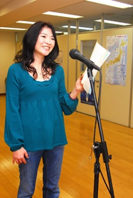

Yuuko Satou is a Japanese voice actress.
- Gender: Female
- Birthday: December 25, 1970
- Hometown: Kanagawa, Japan
- Hobbies: Painting and Singing

| |
Yuuko Satou is a Japanese voice actress.
|
 |
|---|
 |
Edna |
|
Edna is grandfather of Katrina and wife of Jonathan. She was in denial when she met May's. |
 |
Lust |
|
Lust is a Homunculus created by father. She is high intelligent and mildly flirtatious. She embodies father's lust. She partnered with Gluttony to whom have a motherly connection too. Lust acts calm and confident. |